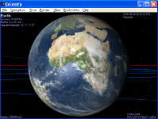
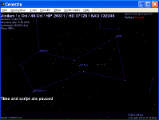
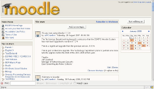
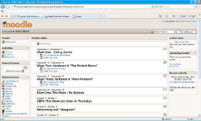
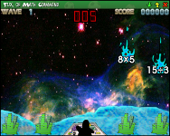
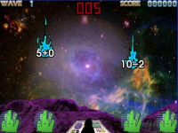
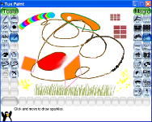
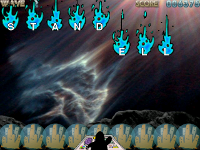
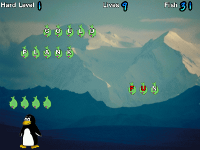

หมวดซอฟต์แวร์ :
สนับสนุนโดย :
การศึกษา
Celestia
โปรแกรมที่ย่อจักรวาลมาไว้ต่อหน้าคุณ ข้อมูลอ้างอิงจาก ข้อมูลด้านดาราศารตร์ ณ ปัจจุบัน ภายในโปรแกรมประกอบไปด้วย ดาวเคราะห์ ดวงจันทร์ และสิ่งต่างๆที่โคจรอยู่ในอวกาศเช่น สถานีอวกาศนานาชาติ Celestia ไม่จำกัดอยู่แค่ ระบบสุริยะเท่านั้น คุณสามารถดูดาวดวงอื่นๆ หรือ ท่องเที่ยวไปนอก ดาราจักร คุณสามารถควบคุม เวลา และ อวกาศ ได้ทั้งหมด และยังสามารถดูดาวได้จากตำแหน่งต่างๆ หรือ ช่วงเวลาต่างๆได้อีกด้วย 
{kind=link}
{kind=link}
Moodle
ระบบบริหารจัดการการเรียนรู้ (Learning Management System หรือ LMS) ระบบหนึ่งที่ได้รับความนิยมมากที่สุดในปัจจุบัน สามารถออกแบบรายวิชาได้ตามต้องการ พร้อมทั้งมีฟังก์ชันให้ใช้งานมากมาย เช่น จัดการสร้างบทเรียน หรือสร้างแบบทดสอบ และอื่นๆ ซึ่งสามารถช่วยอาจารย์จัดการเรียนการสอนได้อย่างมีประสิทธิภาพ 
{kind=link}
{kind=link}
TuxMath
เกมฝึกคิดเลขอย่างง่ายๆ ที่สนุกและน่าตื่นเต้น ใน TuxMath เพนกวิน Tux จะต้องรักษาเมืองของเขาจากโจทย์คณิตศาสตร์ที่ตกลงมา และเขาต้องคิดในใจให้ได้อย่างรวดเร็วในทุกข้อ มิฉะนั้นเมืองของเขาจะราบเป็นหน้ากลอง! 
{kind=link}
{kind=link}
TuxPaint
โปรแกรมวาดรูปง่ายๆ สำหรับเด็ก 3 ขวบขึ้นไป Tux Paint มีการใช้งานที่เรียบง่ายและสนุกสนาน ประกอบด้วยพื้นที่ว่างๆ และเครื่องมือหลากหลายที่ส่งเสริมความคิดสร้างสรรค์ให้กับเด็กๆ ช่วยให้พวกเขาผสมสิ่งต่างๆ หลากสีสรรเข้าด้วยกันจนเป็นภาพวาดที่สวยงาม
{kind=link}

Tux Typing 2
โปรแกรมฝึกหัดการพิมพ์ดีดสำหรับเด็กๆ ที่ประกอบด้วยการละเล่นที่หลากหลาย และความยากง่ายหลายระดับ Tux Typing เหมาะสำหรับใช้สอนเด็กให้มีทักษะในการใช้คีย์บอร์ด ด้วยเกมที่สนุกสนาน ภาพการ์ตูนเคลื่อนไหว เพลงและเสียงประกอบ ทำให้เด็กเรียนรู้การใช้คีย์บอร์ดได้อย่างไม่มีเบื่อ 
{kind=link}
{kind=link}